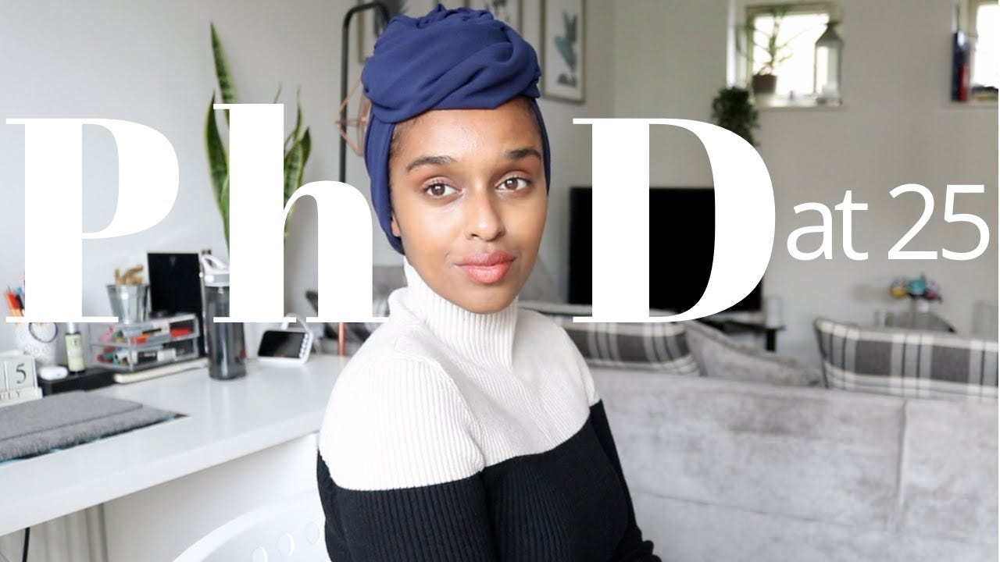

A Ph.D. and founder like Amina Yonis
Women are not doing amazing things in tech, they also do in Academia


God says that if all oceans were ink and all trees of the world transformed into feathers for writing His Words, the ink will finish before we write all of His Words.
It’s like this is what is happening to me in my commitment to writing articles about great women doing amazing and good jobs in any industry, particularly in the Tech Industry because every day I find great women like Amina Yonis worth writing about. Writing good words about people is like writing the words of God because for believers people are created with the picture of God.
Amina Yonis is for sure one of these women who clearly shows that Gender doesn't matter when it is about doing things that make our world a better place and that every one of us who commits to achieve something has for sure enough means to succeed at it by spending enough effort and being brave enough.
That’s what Amina did by finishing a Ph.D. at 25 and now running a venture that seeks to helps PhDs by providing them academic services like Proofreading theses, dissertations, and essays or better-filling university applications. Those like me who are thinking about joining an MBA after a professional career in tech could also attach the service of Amina for finding and joining this great MBA school we seek to join.
Then you students and professionals who want to be assisted in your academic journey can rely on the skills and experience of Amina for helping you produce great research documents or submit better applications to the university or the school of your dream. Amina more than founding an academic services startup is also sharing her experiences and advice on youtube because success is more about giving to other this signal that clearly tells and shows them that they also can achieve what we have successfully achieved.
Then I wish that you would agree with me if I say that from the UK Amina is shedding light on people from all around the world thanks to the opportunity that we got from this connected economy in which we are living in where every one of us can push others forward in their journey of achieving great things that make this world a better place. All these articles that I am writing about great women of talent are just about that and you can be sure that they come deep from inside my heart and one part of why I have named this publishing experiment the Greyio Heart Experiment.
Promoting on purpose that work and the achievement of others just make me feel like I am doing something important and do believe that I am. But whatever the reason is I wish that people like Amina, Mbenda, Misty, Rana, dels Ogun, Maisy, Meezy, Beate, Ashley, Tsedal, Mayuko, Bozoma, Maya, Deanna, Tascha, Sarah, will continue to be safe happy, and producing great works because this world is more about us doing amazing and creative works than it is about computers running algorithms at scale and for profit.
If Book Dojo had enough financial power I would As its CEO decide to hire the service of Amina Yonis as Editor because there are a lot of data-driven books projects waiting for professional copy editing because Book Dojo seeks to publish high-quality data-driven books for book lovers and book communities but unfortunately, resources are scarce and Book Dojo Can’t afford the service of ThePageDoctor for Book editing.
I hope that The page Doctor will grow and gain market share in this academic services market and the fact that it is hiring right now people who are able to help with academic services(you can apply here) is for me a strong signal that this tech-enabled service is growing.